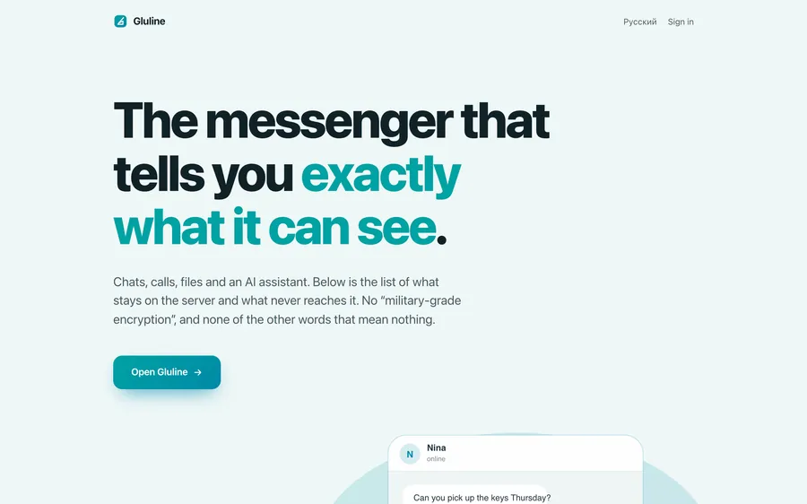
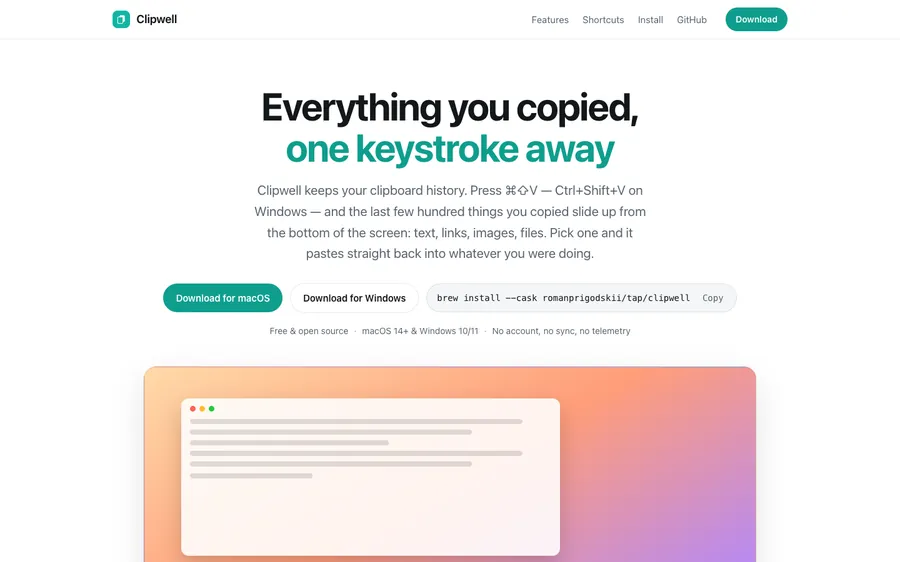

Moscow applying for Fall 2027 entry
Seventeen. I build forecasting systems, score them against the sharpest baseline the market has, and publish the statistics that let a stranger check every claim without asking me anything.
Moscow,
ScrollBehind the type: the 84 pre-registered hypotheses of the e-value audit, each at its e-value at fair odds and after the book's margin. Keep scrolling and they turn into the chart.
The audit, flattened
At fair odds six clear e = 20, the bar for a single hypothesis, and one still clears it after the book's margin, on its best seed. Charged for asking 84 questions of one pool the bar is e = 1,680, and the best of them stops at 151. The paper says so in its abstract.
Moscow Olympiad in Economics, first in Grade 10. 0.7244 AUC on 664 held-out UFC bouts. Co-founder and Head of AI, Gluline. 8,906 bouts modelled. Vertex Boxing: a post-bell leak caught and removed. Two papers under review. Seventeen.
One question runs through all of it. A model produces a number. A market produces a number. Only one of them is priced, and deciding which to believe is a statistical question with a real answer. I build the systems that produce the numbers, then the instruments that measure how much of the difference is signal.
Final year at Letovo School in Moscow, advanced mathematics track. Won the Grade 10 division of the Moscow Olympiad in Economics, first on score. Co-founder and Head of AI at Gluline, four production systems shipped, a fifth, Vertex Boxing, in research, and two sole-authored papers under review at NeurIPS 2026 workshops.
Everything here is traceable to a committed artifact, a published competition protocol, or an official document. Where a diploma and a protocol both exist, this page cites the protocol, because a stranger can check a protocol without me.
Built and shipped


- Alfa-RomeoA neobank demo in SwiftUI over a NestJS backend: exchange, AI copilot, business module, lending, a live peer-to-peer wallet. Source.
01 Live product
Vertex MMA
A nine-model UFC forecasting stack, graded against the bookmaker's closing line on every basis, including the ones where the line wins.

- AUC, held out from 2025
- 0.7244
- fighters
- 4,581
- bouts
- 8,906
- events
- 795
The system
Not one model. A winner ensemble over 118 features (LightGBM, CatBoost and logistic regression, blended on a validation window and order-averaged over both fighter orderings, then a single post-blend age coefficient), a debut specialist, a method model, a debut method model, a cause-specific Poisson finish hazard, a no-intercept logistic decision model, and a ten-thousand-run Monte Carlo simulator. Live in English and Russian: 35 routes in two locales, 1,533 translation keys each, on Next.js 16, React 19, TypeScript 5.9 strict, Tailwind 4, Postgres and Python 3.12. Virtual currency only.
Measured against the market
Held out from January 2025, read directly from committed artifacts. The comparison is reported on every basis, including the ones where the closing line wins, because that is the comparison worth having: the model is better calibrated than the line and less sharp, so what remains is resolution, which needs information the public record does not contain.
| Accuracy | Log-loss | Brier | AUC | |
|---|---|---|---|---|
| Model, all 664 bouts | 0.6747 | 0.6137 | 0.2124 | 0.7244 |
| Model, 582 priced bouts | 0.6753 | 0.6171 | 0.2140 | |
| Closing line, same 582 | 0.6838 | 0.5922 | 0.2035 |
Each metric has its own truncated axis, printed under it, and every row is oriented so that a longer bar is the better score.
Discipline
- Point in time, five ways. Snapshot-then-apply history, strictly-earlier rating lookups, a separate chronological ratings replay, a date-bounded pre-UFC career walk, and a frozen percentile-clipping anchor.
- The market is never an input. Odds are stored, shown and used for scoring, and never enter the feature matrix. Removing them cost 1.5 points of test accuracy. They stayed removed.
- A measured detection floor. Five seeds on a 3,087-bout walk-forward pool put the minimum detectable effect at 0.0036 nats; the one lever ever shipped to the winner leg is worth 0.0026 and shipped only because three independent legs agreed on its sign. The repository says exactly that.
- A written record of failure. Two dozen ideas built, gated and rejected, documented beside the ones that shipped. One shipped feature was later identified as a leak and removed.

02 Released
Gluline
Co-founder, engineer and Head of AI
An end-to-end encrypted messenger, released on the App Store, Google Play and the web, that tells you exactly what it can see.

- released on
- iOS, Android, web
- unit tests at the gate
- 309
- audit findings confirmed
- 42
- and refuted, on record
- 32
What it is
One monorepo across Android in Jetpack Compose, iOS in SwiftUI, a web client, a Python and FastAPI backend, the infrastructure and the protocol documents. The cryptography is ephemeral key exchange, per-message key derivation, Argon2id and elliptic-curve signatures, with WebRTC peer-to-peer calls and a contextual AI assistant built in.
I co-founded it, I write its code, and as Head of AI I own everything the product does with a model, starting with the assistant that sits inside every conversation.
How it shipped
Nothing went to the stores without clearing a written release gate: compile green, 309 unit tests passing, lintVital clean on the release build, and R8 keep-rules verified against the 15 wire fields that have to survive minification. The Android 1.0.0 build shipped as .aab and .apk with mapping files and checksums retained.
Audited twice, adversarially
Two formal codebase audits are on record. The first, in April 2026, raised about 58 findings. The second, before release in August, raised 74 candidates and then ran an adversarial second pass over them: 42 were confirmed, and 32 were refuted and written down as refuted, so the next audit does not spend time on them again.
03 In research
Vertex Boxing
The Vertex method on professional boxing, built to test one thesis: that regional and undercard markets are priced softly enough to leave room. The data said the opposite, and the project records it as a finding.
- blended into the market price
- +0.0043
- closing-line value at the top, over the bottom, on unseen data
- ×1.8
- held-out bouts it is scored on
- 89,087
- real bets placed
- 0
The thesis, and what happened to it
The project began from a claim: the UFC closing line is sharp, but regional and club boxing lines are soft, so that is where a fundamentals model would find room. Cut by level, the priced test set says the reverse. Club fights over four to six rounds return −20.2% at a fixed 2% edge threshold. Twelve-round title fights carry the strongest closing-line value, +0.0183, and +14.6%. Three independent markers of level, distance, belts and depth of record, all point the same way.
The mechanism is the useful part. The model reads records and ratings, and a rating is only as good as the record under it. At world level both fighters have thirty bouts behind them; on a club card the market knows which of the two is being managed, and the model is reading two thin records.
Checked on a window the rule never saw
The model was refit up to June 2021 and the rule copied, unedited, onto June 2021 to June 2023. The direction held: the top of the market gave 1.8 times the closing-line value of the bottom, +0.0270 against +0.0150, with barely overlapping intervals. The money did not: +4.2% with zero inside the interval, against +11.3% on the window where the cut was chosen. That is the shrinkage a post-hoc cut predicts, and the record treats it as part of the answer.
The leak it caught
Judges' scorecards are published only for fights that went the distance, so the mere presence of judge fields told the model how a fight had ended, a fact nobody has before the bell. Where judges were recorded, 9.7% of fights ended early; where they were not, 74.3% did. A control on 5,673 events, same page and same crawl, confirmed it was the outcome and not the crawler. The leak was worth +0.0042 [+0.0035, +0.0049] on the confirmation half. It is gone, and the bench was then made to reproduce itself exactly, after two identical runs were found to disagree by 0.0002.
Where it stands
As of 4 August 2026, and all of it backtest. On its own the model does not beat the closing line: the gap is −0.0211, or −0.0198 with a yearly refit. In the same run, blending it into the market price improves that price by +0.0043 [+0.0024, +0.0062]: it carries information the price does not. On twelve-round and continental or world title fights, 803 backtest bets show closing-line value of +0.0143 [+0.0104, +0.0182] and +8.7% [−0.0%, +18.0%], and the one interval that ever excluded zero no longer does. The margin paid at the open is about twice the closing-line value, so at the closing price the strategy's expectation is negative. The project says exactly that, first.
Scored as two-outcome log-loss: adding draws to the target was measured, and moved nothing.
04 Client work
Zacks to Interactive Brokers
A commissioned execution pipeline that turns a published rank into Interactive Brokers orders, on a schedule, dry run by default.
- role
- sole developer
- client
- paid
- default mode
- dry run
- hosting
- VPS, scheduled
What it does
The only project here that somebody else specified and paid for. It ingests screen exports from Zacks, turns them into target positions, reconciles those against what the Interactive Brokers account actually holds, and places the orders that close the gap. Collection runs on a schedule on a VPS.
Why dry run is the default
The failure mode is money. So the pipeline does nothing to the account unless it is told to, every run reconciles before and after, and a malformed export or a surprising position stops the run rather than guessing its way through it.
05 Open source
Clipwell
A small, native clipboard history for macOS and Windows. Free, MIT licensed, and one Homebrew command away.
- macOS
- Swift, SwiftUI
- Windows
- C#, WPF
- install
- Homebrew cask
- account needed
- none
Written twice
The same bar, the same cards, the same keys and the same history format, implemented natively on both platforms rather than once in Electron. No account and no subscription. Installing it is brew install --cask romanprigodskii/tap/clipwell, which meant shipping a cask, a release pipeline and a product site alongside the app itself.
The detail nobody sees
Content that a password manager marks as concealed or transient is never written to disk. Clipboard managers are a quiet way to leak secrets, and this one declines to.
Research
Two sole-authored papers, three submissions, all under review at NeurIPS 2026 workshops. Both grew out of Vertex, and both are about one discomfort: an evaluation that reports what it found and not what it could have found.
-
Testing by betting when the bets are real
The null is a bookmaker's posted price, the stake is a stake, and the wealth process is the e-process. 84 pre-registered hypotheses, 1,787 priced bouts, re-audited as bets.
E-Values: From Statistics to ML and NewInML
-
Measure the instrument first
An evaluation reports that a candidate improved a metric. It almost never reports the smallest improvement it could have detected, and those are different claims.
TAE: Can We Trust AI Evaluation?
The record
Evidenced against published competition protocols wherever a protocol exists, on the principle that a protocol can be checked by a stranger. Links to each on request.
Economics
- 1st Moscow Olympiad in Economics, winner, first place by score in the Grade 10 division. One of the largest regional economics olympiads in Russia, and this is its top individual result. Verified
- ×2 All-Russian Olympiad in Economics, national finalist in two separate years. The All-Russian Olympiad is the national academic competition system; reaching its final twice puts me in the national cohort in the subject. Verified
Mathematics
- Gr 9 All-Russian Olympiad in Mathematics, regional stage prize-winner. Protocol
- Gr 8 Leonhard Euler Olympiad, regional prize-winner, third degree. The Euler Olympiad is the All-Russian mathematics olympiad at Year 8: same regional dates, problems set by the same central methodological commission. Read with the row above, that is a regional prize in two consecutive years. Protocol
- Gr 7 All-Siberian Open Olympiad, third-degree diploma. Protocol
- Gr 9 Letovo School, best MYP personal project in Mathematics, signed by the director, March 2025. Signed
School
- 6.38 Letovo School, Moscow. Grade 11, final year, advanced mathematics track. GPA 6.38 out of 7.0, above group average in algebra and in every core quantitative subject inside the school's most competitive quantitative group. / 7.0
- 790 SAT Mathematics, August 2026. A further sitting is scheduled for December 2026. / 800
How I work
Five rules, applied across every project, visible in the artifacts.
-
Measure against the hardest baseline available, and publish the comparison
Vertex is scored against a bookmaker's closing line, the strongest benchmark the domain has, on every basis including the windows where the baseline wins.
-
Gate before shipping
Every change is measured against a pre-computed detection floor before it ships. The one Vertex lever that shipped below its floor did so because three independent evaluation legs agreed on its sign, and the repository says so. Gluline went to the stores through a written release gate.
-
Keep the rejects
Two dozen failed ideas sit in the Vertex repository next to the shipped ones with the reason each was rejected. Thirty-two refuted audit findings sit in Gluline's.
-
Report negative results as negative
The e-value paper's headline finding is that the market wins, and the paper says so in its abstract rather than in a limitations section on page eight. Vertex Boxing leads with the thesis it refuted.
-
Claim precisely
Submitted means submitted, not published. Backtest means backtest. An award cites its protocol. A number carries the window it was measured on.
Toolkit
Modelling
Python, LightGBM, CatBoost, scikit-learn, NumPy, pandas, statsmodels, Monte Carlo simulation
Statistics
E-values and test martingales, anytime-valid inference, walk-forward validation, calibration and sharpness, detection floors
Web
TypeScript, Next.js, React, Tailwind, Postgres, Supabase, Drizzle, internationalisation
Native
Kotlin and Jetpack Compose, Swift and SwiftUI, C# and WPF
Backend
Python and FastAPI, NestJS, Docker, Linux, Caddy, SOPS, VPS operations
Writing
LaTeX, bilingual technical writing in Russian and English
Research, internships, or a problem with a real baseline in it. The address below copies itself when you click it.
lioneldassy@gmail.comNow
- Waiting on
- TAE decision on 22 September, E-Values and NewInML on 29 September
- Building
- Vertex Boxing, the method on professional boxing
- Based in
- Moscow,